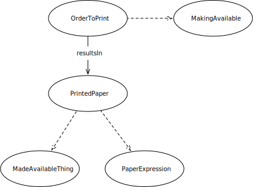

IRI: http://parliament.uk/ontologies/order-to-print/MadeAvailableThing
IRI: http://parliament.uk/ontologies/order-to-print/MakingAvailable
IRI: http://parliament.uk/ontologies/order-to-print/OrderToPrint
IRI: http://parliament.uk/ontologies/order-to-print/PaperExpression
IRI: http://parliament.uk/ontologies/order-to-print/PrintedPaper
IRI: http://parliament.uk/ontologies/order-to-print/resultsIn
This HTML document was obtained by processing the OWL ontology source code through LODE, Live OWL Documentation Environment, developed by Silvio Peroni.